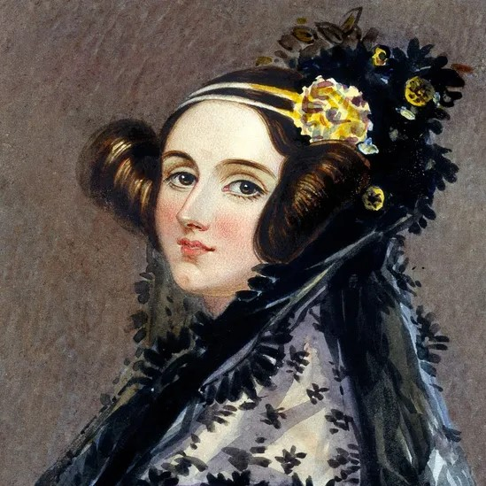
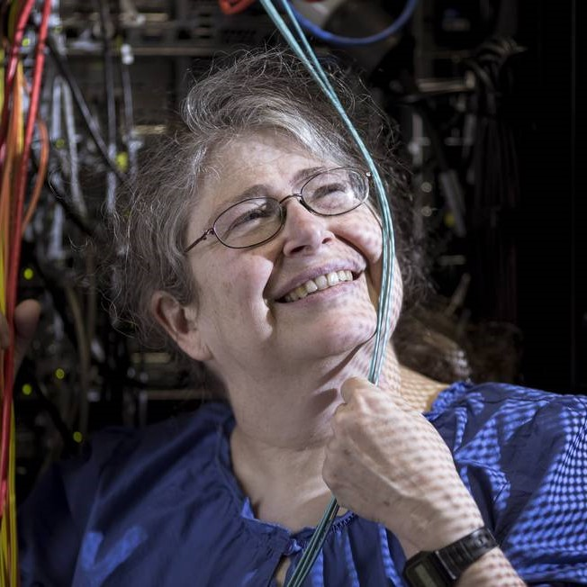

TechWomans
O futuro da TI é feminino
Mulheres que transformaram a tecnologia
A tecnologia que usamos hoje foi moldada por mentes brilhantes, e muitas delas foram mulheres que desafiaram barreiras e mudaram o mundo com suas descobertas e inovações. De pioneiras da programação a cientistas visionárias, suas contribuições são fundamentais para o avanço da ciência e da computação. Conheça seis mulheres incríveis que fizeram história na tecnologia e inspire-se com suas trajetórias!
Mulheres notáveis

